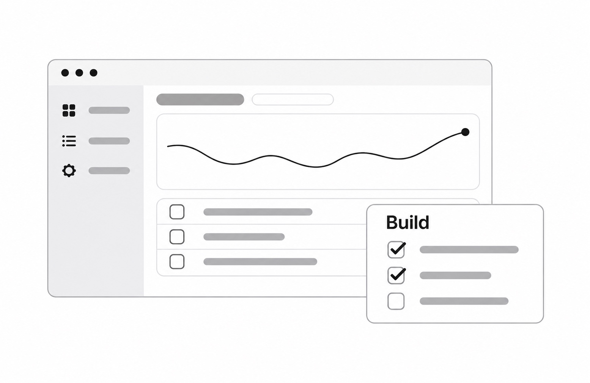
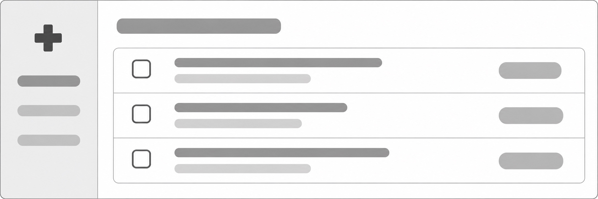
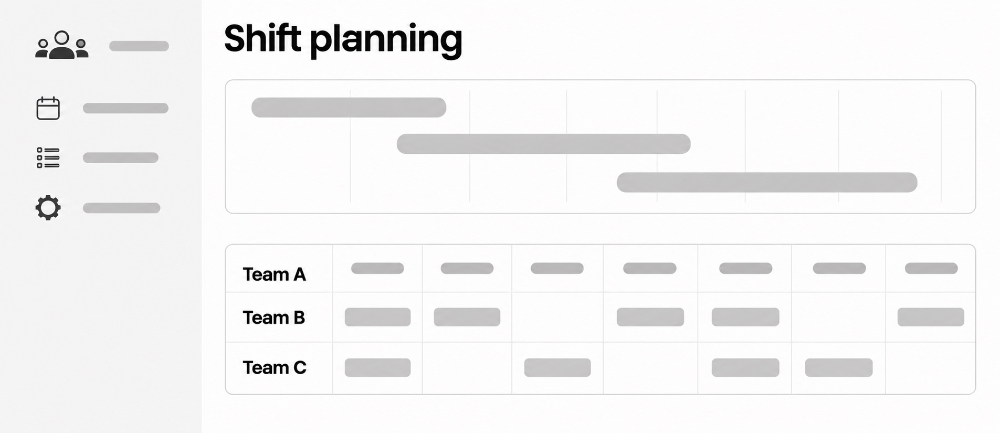
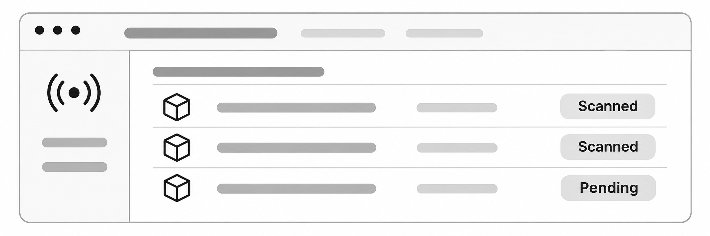

01 What we do
From product decisions to working software.
Product, CX and UX strategy.
Define the product and the experience around it.
The product you build and the experience you deliver depend on the same decisions: whose needs matter, where the opportunity lies and what to prioritise. We connect business goals with customer expectations, then translate that direction into journeys, task flows and design principles. Your team has a shared brief for design and engineering, and a basis for making trade-offs.
Discuss your strategyProduct direction and experience strategy
- Product strategy: define the proposition, business priorities and roadmap, so your team knows what to build and why.
- CX strategy: map customer journeys across channels and service touchpoints, identifying gaps and opportunities to improve the experience.
- UX strategy: translate user needs into task flows and interaction principles to guide design, prototyping and usability evaluation.
Get the product built and into use.
Bring delivery and engineering into the same conversation.
Between a brief and a release, someone has to resolve the detail. We take on product decisions, delivery coordination and engineering together, so requirements, integrations and release priorities stay connected as the software takes shape.
- Product requirements and delivery planning
- Software development and system integrations
- Testing, release and iteration

Agentic operations across your business.
Coordinate the work between people, agents and systems.
When information sits across separate systems, your team has to assemble the context, decide what happens next and carry the work forward. We design agentic operations around that whole workflow: connecting data, assigning tasks to specialist agents and coordinating their actions across your tools. We define how agents hand work to one another, when exceptions need a person and how your team monitors the results, so you can delegate work with clear accountability.
Discuss agentic operationsAgentic engineering and operations
- Connected workflows: give agents access to the data and tools each task requires.
- Agent coordination: define responsibilities, business rules and hand-offs across the operation.
- Operational oversight: build in permissions, human approvals, exception handling and performance monitoring.
02 Selected work
Software shaped by the operation behind it.

TriageFlow
Medical referral teams need to assess requests and decide what needs attention. TriageFlow applies AI to referral review and prioritisation, supporting the people making those decisions.

MySquare
MySquare centres on real-world assets: translating a physical asset proposition into a digital platform, with the product decisions and engineering that requires.

Workforce Management
Planning a workforce means connecting the schedule with how the operation performs. This system brings scheduling, performance tracking and operational planning together.

RFID Asset Management
Knowing which asset you have is the starting point for tracking it. This system uses RFID identification and scan activity to connect physical assets with their digital records.
03 Working together
Clear responsibilities from the first decision.
01 Understand
We work through the problem with the people who know it. We examine existing systems, constraints and assumptions, then agree what a useful result would look like.
02 Define
We set the scope, responsibilities and delivery priorities together. You know what we are building, what we need from your team and where decisions need more evidence.
03 Build
We bring working software into regular reviews. Your team can assess the detail, question assumptions and make informed trade-offs while we manage development and integration.
04 Put to use
We test against the workflows the product must support, resolve feedback and prepare the release. Experience in use then gives us the evidence for the next round of improvements.
04 Start a project
Start with the problem you need to solve.
Tell us what you are trying to achieve, what you have today and where progress has stalled. We’ll discuss where the work needs to start and what Whitespace would take responsibility for.
Where would an engagement start?
That depends on what you already know. An early idea may need product definition; an agreed brief may be ready for development. We use the initial conversation to establish the starting point, then agree the work, responsibilities and review process before proceeding.
How would AI fit into our existing systems?
We examine the task first: what information it needs, which rules apply and what action should follow. Then we assess data access and integration options. An agent’s permissions and human review points form part of that design, alongside the software connecting it to your systems.